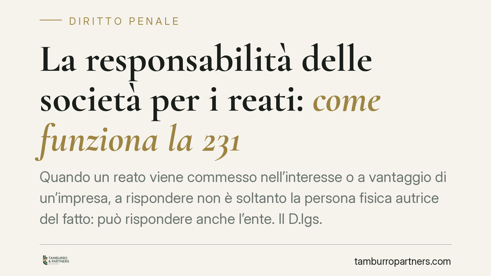

La responsabilità delle società per i reati: come funziona la 231
Quando un reato viene commesso nell'interesse o a vantaggio di un'impresa, a rispondere non è soltanto la persona fisica autrice del fatto: può rispondere anche l'ente. Il D.lgs. 231/2001 disciplina questa responsabilità con regole proprie, distinte da quelle del processo penale ordinario. Comprenderne i meccanismi è essenziale per chiunque amministri o rappresenti una società.

Il principio: l'ente risponde in nome proprio
Per lungo tempo ha operato il brocardo *societas delinquere non potest*: solo la persona fisica può commettere reati. Il D.lgs. 231/2001 non ha abrogato quel principio, ma ha introdotto accanto ad esso una responsabilità autonoma dell'ente, qualificata formalmente come «amministrativa da reato» ma con caratteri sostanzialmente penalistici (sanzioni afflittive, accertamento davanti al giudice penale, garanzie difensive).
La natura giuridica di questa responsabilità resta oggetto di dibattito dottrinale e giurisprudenziale. Ai fini pratici conta però un dato: l'ente non risponde per il fatto altrui, ma per una propria colpa di organizzazione, cioè per non aver adottato assetti idonei a prevenire il reato.
Il quadro normativo
L'art. 8 D.lgs. 231/2001 sancisce l'autonomia della responsabilità dell'ente: questa sussiste anche quando l'autore del reato non è identificato o non è imputabile, e persino quando il reato si estingue per causa diversa dall'amnistia. In altre parole, le vicende personali dell'imputato persona fisica non travolgono automaticamente la posizione della società.
L'art. 39 impone che l'ente partecipi al procedimento tramite il proprio rappresentante legale. La norma pone però un limite rilevante: il rappresentante indagato o imputato per lo stesso illecito non può rappresentare l'ente, per evidente conflitto di interessi. In tali casi occorre individuare un diverso soggetto legittimato.
Quanto alla prescrizione, l'art. 22 prevede un termine di cinque anni dalla consumazione del reato presupposto. L'interruzione opera con la richiesta di applicazione di misure cautelari interdittive e con la contestazione dell'illecito ai sensi dell'art. 59. Dopo l'interruzione il termine riprende a decorrere per intero: non vale, qui, il tetto massimo di durata previsto per la prescrizione penale ordinaria. È una regola spesso sottovalutata, perché rende la posizione dell'ente più esposta nel tempo rispetto a quella della persona fisica.
Il cuore della difesa: modello organizzativo ed esimenti
Il centro del sistema è il modello di organizzazione, gestione e controllo. La sua idoneità non si valuta in astratto, ma rispetto al rischio-reato effettivo dell'attività svolta. Il regime probatorio cambia a seconda di chi ha commesso il reato.
Se l'autore è un soggetto apicale (art. 6), l'onere della prova grava sull'ente: deve dimostrare di aver adottato ed efficacemente attuato un modello idoneo prima del fatto, di aver affidato la vigilanza a un organismo dotato di autonomi poteri (l'Organismo di Vigilanza) e che l'autore ha commesso il reato eludendo fraudolentemente il modello. È una prova complessa, perché implica mostrare che il sistema funzionava ed è stato aggirato con l'inganno.
Se invece l'autore è un sottoposto (art. 7), la responsabilità si fonda sulla carenza di direzione o vigilanza; in questo caso l'adozione e l'efficace attuazione di un modello idoneo esclude l'inosservanza degli obblighi, con onere che tende a gravare sull'accusa.
La giurisprudenza di legittimità ha progressivamente chiarito che il modello non può essere un documento di facciata: deve riflettere i processi reali dell'impresa ed essere aggiornato. Un Organismo di Vigilanza inattivo o privo di reale indipendenza vanifica l'intero impianto difensivo.
Cosa cambia per l'impresa
Le conseguenze sono concrete: sanzioni pecuniarie commisurate per quote, sanzioni interdittive (dal divieto di contrattare con la pubblica amministrazione alla sospensione dell'attività), confisca del profitto. Per molte realtà il rischio maggiore non è la multa, ma la misura interdittiva, capace di incidere sulla continuità operativa.
Cosa fare in concreto
- Verificare l'esistenza e l'attualità del modello 231: se assente o datato, va costruito o aggiornato sul reale profilo di rischio dell'attività.
- Controllare l'effettività dell'Organismo di Vigilanza: autonomia, poteri reali, flussi informativi documentati e verbali periodici.
- Mappare i reati presupposto rilevanti per il settore in cui opera l'ente, distinguendo le aree a rischio apicale da quelle dei sottoposti.
- Predisporre per tempo la gestione del conflitto ex art. 39, individuando chi rappresenterà l'ente qualora il legale rappresentante sia coinvolto nello stesso procedimento.
- È opportuno che la posizione dell'ente sia valutata tecnicamente sin dalle prime fasi del procedimento, data l'autonomia della responsabilità rispetto a quella della persona fisica.
Contributo informativo a cura di Tamburro & Partners - Avv. Giuseppe Tamburro. Non costituisce parere legale.
Ogni condominio ha una storia a sé.
Se gestisci un'amministrazione e vuoi un confronto su una specifica questione condominiale, scrivi allo studio. Ti rispondiamo entro un giorno lavorativo.